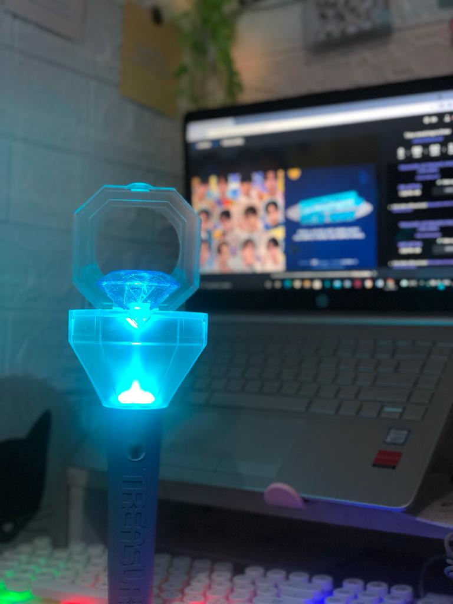
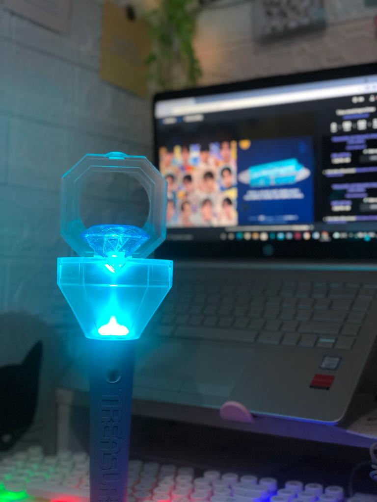

|
Holla, my full name is Wan Nur Ayuni Binti Wan Mohd Zain.
My name Ayuni means supporter of goodness. People usually called
me Yun, Yunie or unie. I am 21 years old. I was born in 1 August
2001 at Hospital Besar Kota Bharu, Kelantan. Now I'm furthering
my studies in Diploma of Information Management at Universiti Teknologi
MARA Kelantan, campus Machang which is a stone throw from my house.
My favourite color is pink because pink symbolizes youth, good health,
and playfulness. It’s the flush of first love and stands for nurturing
and associated with love, kindness and femininity. My favourite sport if
I has a leisure time is playing badminton. I like to play badminton because
it can less my stress and burden but at the same time it can give me benefits
which is having a great stamina and health.
The personality One thing about me is important to know though is that at first,
I come of as a very shy individualistic girl but once I get to know people and are comfortable with my environment I am great. It is hard for me to make a new friends but once I make them, it’s great and I am all different. I joke, laugh and humor people and I also get as much as I give. I am a very kind, compassionate, sensitive girl. I have a tough shell but on the inside I am soft. I am also a very principled person and stand strong on what is right and wrong. I am also a very straight and honest person. I understand and know that we all put on a show sometimes and do not show who we really are or what we feel but some people do this constantly and those kinds of people I cannot stand. I am a full-time student, motivated my love from learning and succeding to become successful woman in today's society.
|


 
